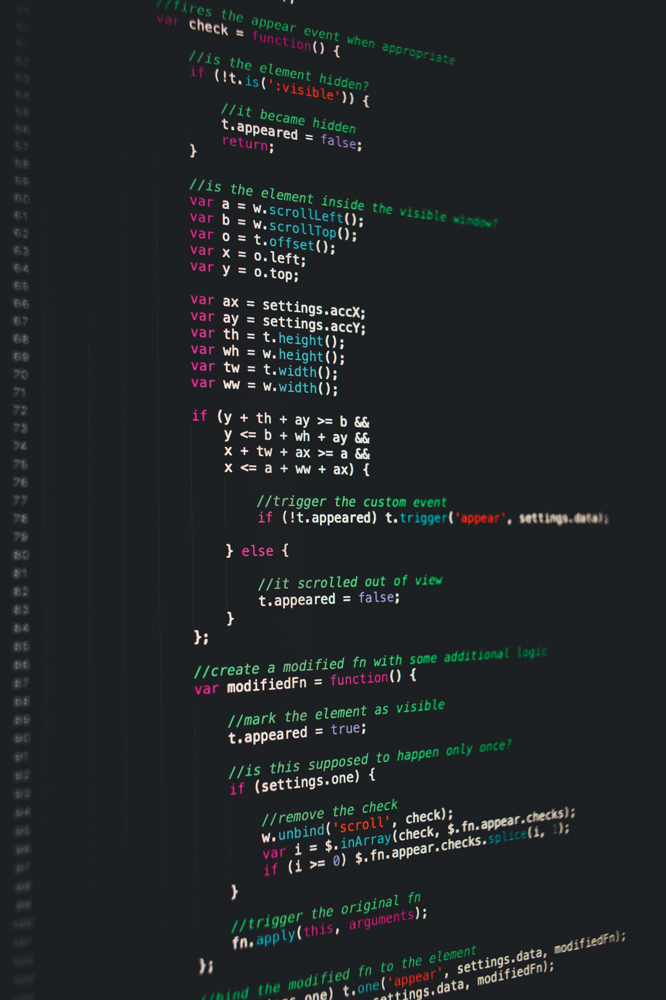

Intresses
Mijn Intresse in creatie

Ik ben al van kinds af aan zeer gegrepen door een voorliefde aan dingen maken. Toen ik nog klein was knutselde ik enorm veel, van de gebruikelijke kunstwerkjes tot dingen om mee te spelen. Toen ik begon met mijn studiekeuze was het maken van video-games de grootste reden voor het kiezen voor programmeren, omdat ik zelf ook veel games speel, maar mijn liefde voor creatie binnen het vak gaat verder dan enkel games programmeren.
Verdere interesses
Los van deze intresse in creatie zijn er nog twee andere onderwerpen waar ik van hou: mythologie en wetenschap. Hetgene dat mij aantrekt in mythologie zijn de fantastische van oude beschavingen over de verschillende exentrieke goden die zij vereerden. Mijn intresse voor wetenschap stamt voort uit de wens om de wereld waarvan ik deel uitmaak beter te begrijpen. Helaas is een groot deel van dit onderwerp vaak veel te ingewikkeld voor iemand als ik.
Hobby

zoals ik in de eerste paragraaf al vermelde is mijn enige hobby gamen. Ik spendeer een groot deel van mijn vrije tijd met het spelen van verschillende games, meestal tot ik ze 100% uit heb of tot ik beslis dat ik nooit aan de 100% zal raken en het met pijn in het hart moet opgeven. Vaak komt mijn interesse voor mythes ook terug in deze games, zoals een personage, locatie of monster dat op een mythe gebaseerd is.